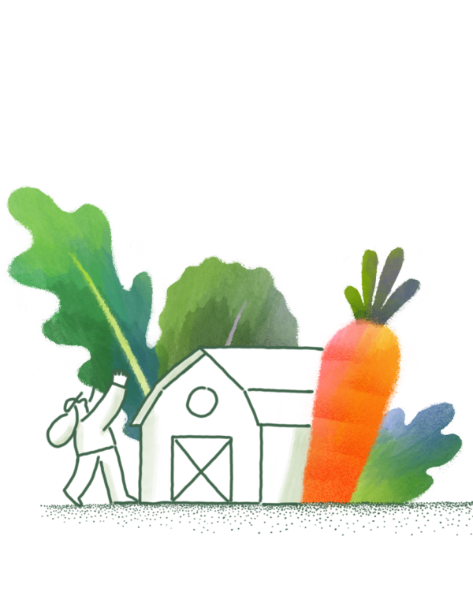
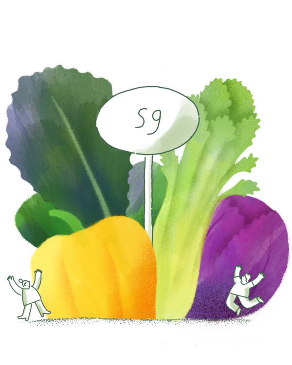

Our Mission
Building healthier communities by connecting people to real food
We're leading a movement to reimagine fast food for a new era.
Our core values guide our actions and we aim to empower our customers, team members and partners to be a positive force on the food system. That's why we're building a transparent supply network, why we cook from scratch, and why we're building a community of people who believe in the power of real food.

Our Story
Were in the business of feeding people, and we're out to change what that means
We started sweetgreen as three college students who were simply looking for a healthier way to eat.
When we were in school, there were two choices: food that was slow, expensive, and fresh- or fast, cheap, and unhealthy We saw an opportunity to create a business where quality was never sacrificed for convenience. On August 1st 2007, two months after graduating, we opened sweetgreen in Washington DC, and served our first customers with a vision to reimagine fast food.
Learn more
Sustainability
We believe that climate change is the defining challenge of our generation
We're committed to becoming carbon neutral by the end of 2027.
In a world where the long- and short- term effects of climate change pose major challenges for farmers, the need for regenerative food systems has never been more important. That's why we've made a promise to do more for the planet, by taking less. Our plant-forward menu means that we're already on average 30% less carbon intensive than the average American meal.
Learn more-

We work closely with our suppliers to help implement industry-leading strategies for carbon minimization. Our goal is to support farmers and producers who participate in regenerative practices-ones that give more to the land than they take away.
-

We calculate an accurate carbon footprint for each of our menu items by commissioning carbon assessments of our specific suppliers. These reports illustrate how much carbon is generated at every stage of business, from seed to salad. We use this data to direct our menu and adjust as needed.
-

We optimize our building materials from construction to furniture. investing in clean energy, and industrial equipment to make a minimal impact. Our restaurants are designed to contribute to a more sustainable future by embodying our values in a tangible way while broadening access to real food across the country.
We work closely with our suppliers to help implement industry-leading strategies for carbon minimization. Our goal is to support farmers and producers who participate in regenerative practices-ones that give more to the land than they take away.